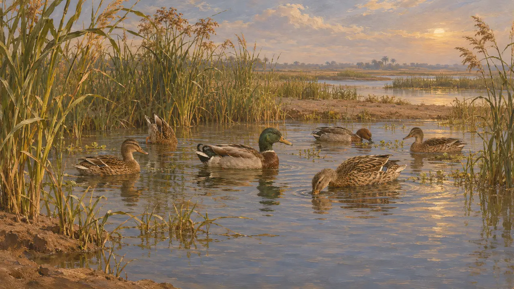
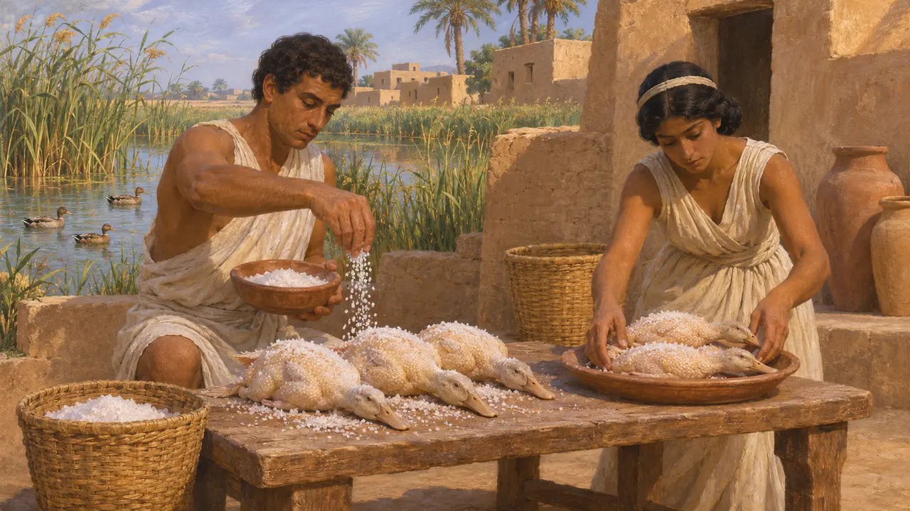
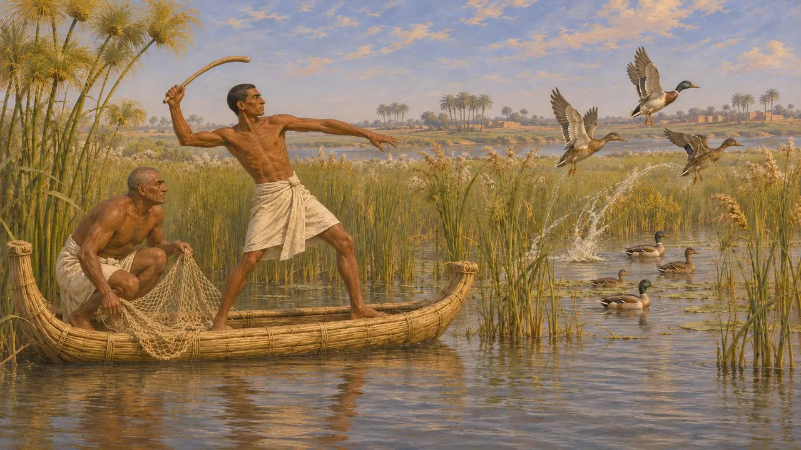
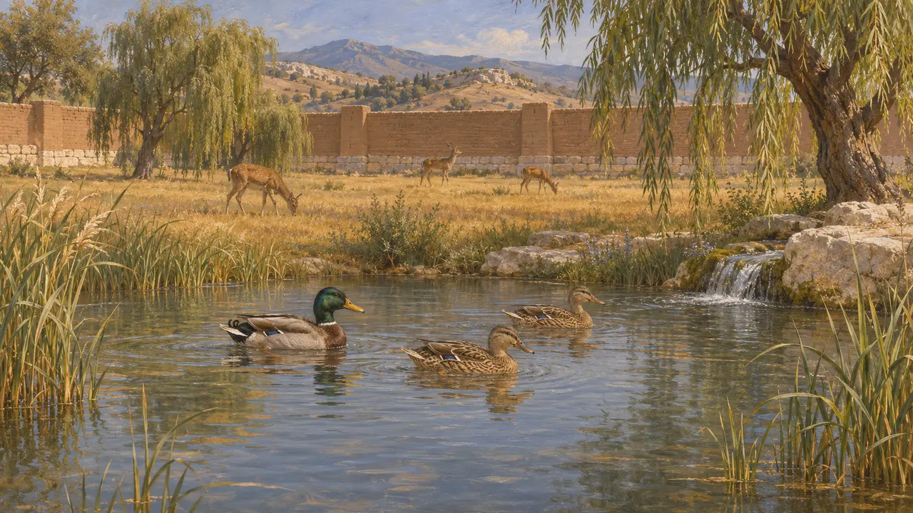

Anatre selvatiche
Uccelli acquatici dei fiumi, delle paludi e degli stagni dell'impero, 559-479 a.C.
Nel gioco: Livello 1: La tomba del fondatore, Livello 3: La Menzogna, Livello 4: La Terrazza, Livello 5: La Carta, Livello 6: Il ponte di barche, Livello 7: Sardi brucia, Livello 8: La baia di Maratona, Livello 9: Il canale, Livello 10: Le Porte Calde, Livello 11: Il finale
Le anatre selvatiche vivevano sui fiumi, sui laghi e nelle paludi delle terre governate dai re persiani. Gli autori antichi dell'epoca ne dicono quasi nulla, e non si conosce alcun testo achemenide che registri una caccia all'anatra. Quanto si può dire si basa sull'ambiente naturale e su pochi indizi indiretti.
Nel gioco: Il gioco raffigura le anatre selvatiche come elementi scenici sulle terre che la città non ha occupato, in dieci livelli da Pasargade a Platea, con richiami di anatre uditi sull'acqua vicina. Nessuna regola le considera.

Ciò che le fonti non dicono
Racconto anticoNessuna fonte antica del periodo elenca gli uccelli acquatici di alcuna regione dell'impero. Quali specie fossero presenti, e in che numero, è dunque dedotto dall'ornitologia moderna e dalla geografia delle zone umide. Fiumi, margini dei laghi e paludi in Egitto, in Mesopotamia, in Anatolia e in Grecia offrivano tutti un habitat, ma si tratta di un'inferenza e non di una testimonianza.
P. Briant, From Cyrus to Alexander, 2002

Le anatre come cibo in Egitto
Racconto anticoErodoto dice che gli Egizi mangiavano crudi alcuni uccelli dopo averli salati, citando le quaglie e le anatre insieme a uccelli piccoli. Scrisse alcuni decenni dopo la conquista persiana e riferisce ciò che apprese in Egitto. Le sue parole mostrano che ai suoi tempi lì si mangiavano le anatre. Non descrivono l'usanza persiana.
Herodotus 2.77

La caccia agli uccelli nell'arte egizia
Nelle fontiLe pitture e i rilievi tombali egizi, per lo più di secoli prima dei Persiani, mostrano la caccia agli uccelli nelle paludi con bastoni da lancio e reti. Mostrano che la selvaggina acquatica fu a lungo fonte di cibo e di svago in Egitto, il paese conquistato da Cambise. Sono testimonianze egizie, non persiane.
Excavated tomb scenes of Egypt, cited generally

Parchi e selvaggina
Racconto anticoSenofonte descrive a Celene un parco recintato con animali selvatici, tenuto da Ciro il Giovane, e lo chiama con la parola greca paradeisos. Gli animali che cita sono mammiferi, e nessuna fonte dice che in simili parchi si cacciassero le anatre. Qualsiasi immagine di una caccia reale alle anatre sarebbe una congettura.
Xenophon, Anabasis 1.2.7
Fonti
- Herodotus 2.77
- Xenophon, Anabasis 1.2.7
- P. Briant, From Cyrus to Alexander, 2002